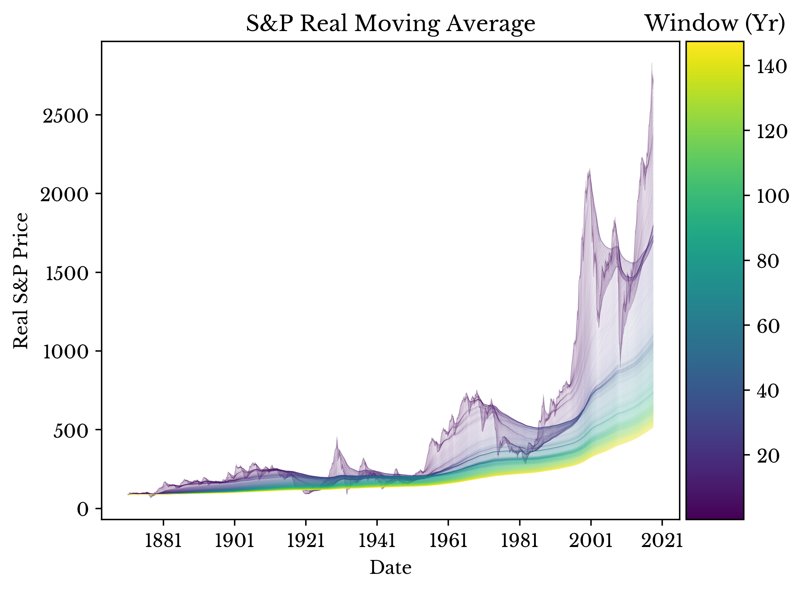

Real S&P Composite Moving Average
Sat, 16 Jun 2018
Data Science, Data Visualization, Economics, S&P, Statistics, Stocks
Recently, I have been experimenting with windowing functions for time series data. While trying out my code, I came up with a nice and (somewhat) thought-provoking plot.

Figure 1: Windowed Moving Average of Real S&P Composite Index
The plot shows the moving average of the real (inflation adjusted) S&P composite stock price index with progressively wider windows. The averages for the darker lines are taken over shorter time periods with the lighter lines over longer ones. The larger windows smooth out the recent volatility in the stock marker showing a more modest growth rate. Data collected from
the website of Dr. Robert J. Shiller.
Figure 2: Alternative Padding Schemes
The plot in Figure 1 uses the average of the previous
n time periods. By adjusting the padding, some other cool (though less meaningful) plots are constructed. These plots are shown in Figure 2.
{kind=link}
{kind=link}
{kind=link}
{kind=link}